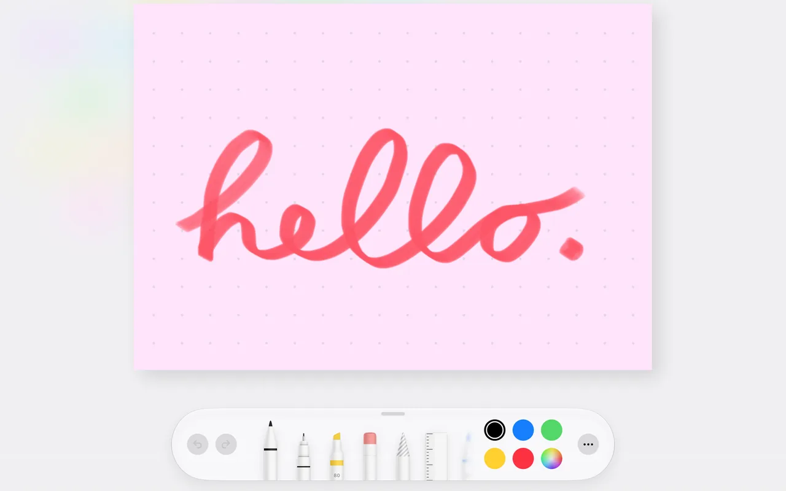
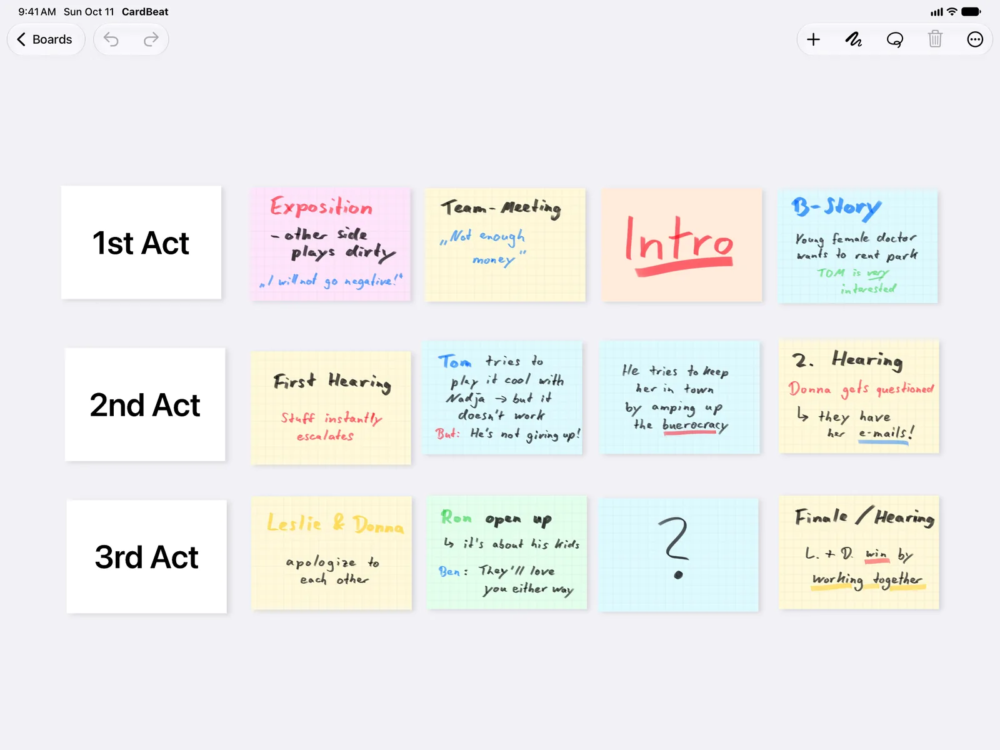
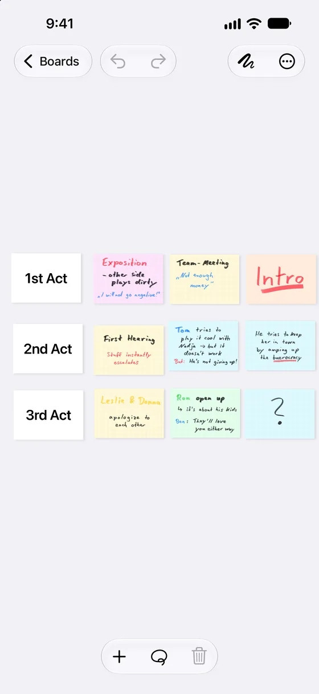
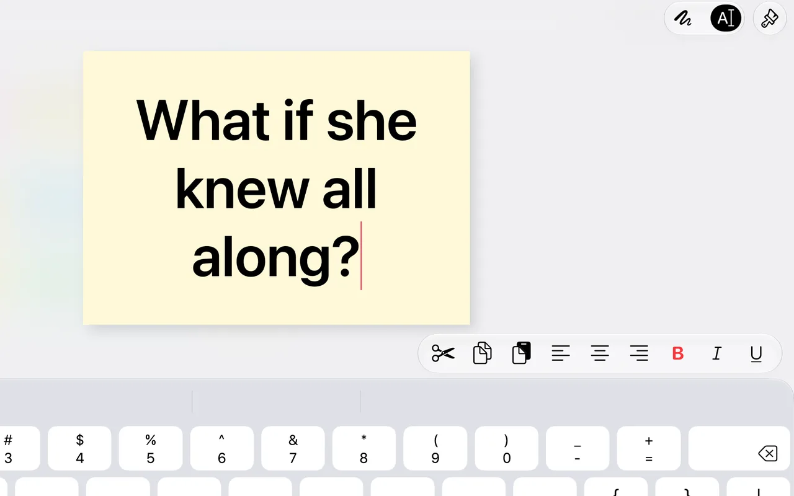
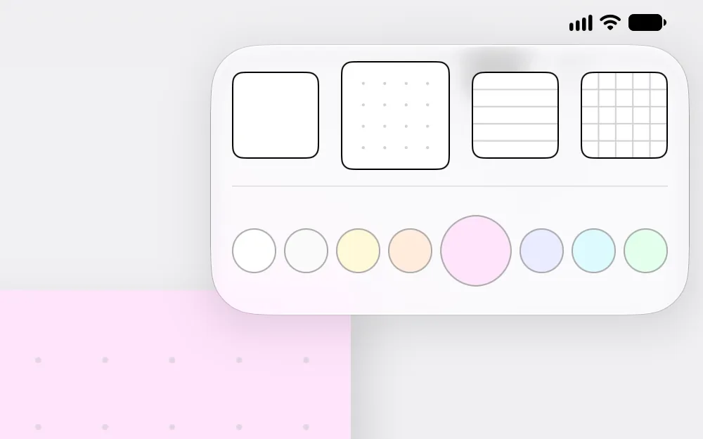
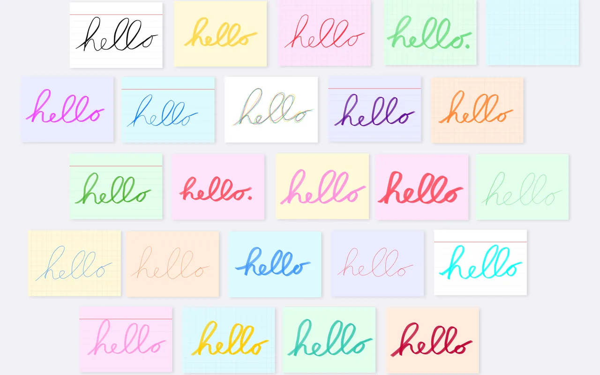
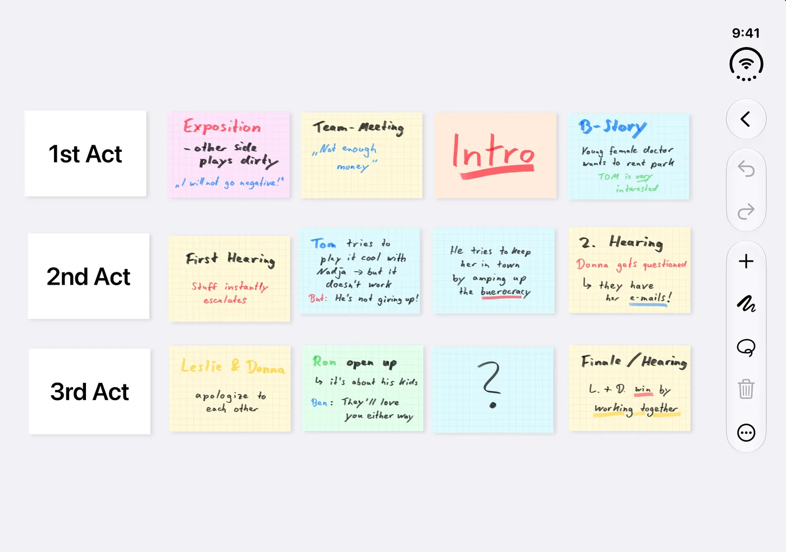
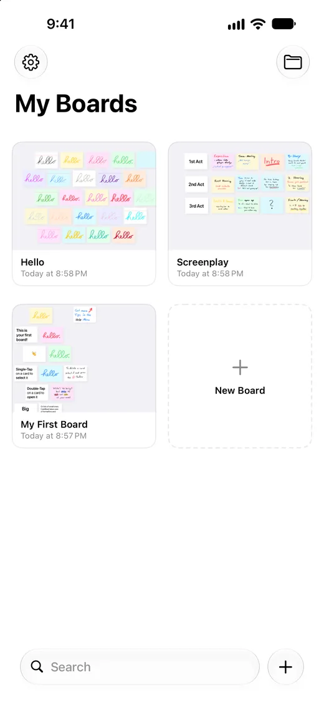

Write by hand
Use Apple Pencil or just your finger, with pens, pencils and markers in any color you like.
CardBeat is a digital corkboard for iPhone and iPad. It keeps all the fun things about index cards – and gets rid of all the rest.


Break your story into acts, sequences and scenes. Put each beat on a card, pin it to the board and shuffle until the structure works – without wasting ink or paper.

Use Apple Pencil or just your finger, with pens, pencils and markers in any color you like.

Prefer a cleaner look? Every card takes keyboard input, with bold, italics and alignment.

Blank, lined, dotted or grid cards in eight colors. Give each character, subplot or timeline its own.

Sketch, underline, circle and scribble in the margins – just like on paper, but with undo.
No rows, columns or table cells. When you want things tidy, turn on the magnetic grid.
Pull back for the big picture, then zoom into a single scene. A mini-map keeps you oriented on large boards.
Connect a TV, monitor or projector and CardBeat shows a clean view of the board, fitted to the screen, while you keep working.
Moved a card, erased a line, deleted a scene? Undo and redo across the whole board.

CardBeat is made for iPhone Duo. Unfold your phone and see your whole story on one screen – then fold it and keep plotting on the go.
Boards stay in sync across iPhone and iPad – or switch syncing off with a single toggle.
Send a board to a producer, editor or writing group – card text laid out exactly as on your board.
Export a board as a CardBeat file. Your co-writer imports it and keeps working – cards, handwriting and all.

No subscription. Try CardBeat with two full boards, then unlock unlimited boards once.
Price shown in the App Store for your region.
No accounts, no ads, no third-party analytics. CardBeat doesn't collect any data. Your story stays on your devices – and in your own iCloud, if you want it there.
CardBeat is a digital corkboard for iPhone and iPad. You plot a novel, screenplay or short story on index cards: one card per scene or beat, arranged in acts and sequences, and rearranged as often as you like.
Yes. CardBeat is built for exactly that. Put every scene on a card, line the cards up by act and move them until the structure works. Connect a TV or projector to show the board in a writers' room.
Yes. Use cards for chapters, scenes or plot points, and color-code them by point of view, subplot or timeline.
No. You can write on cards with your finger or type with the on-screen or a hardware keyboard. Apple Pencil works too.
CardBeat is free with two boards. A one-time in-app purchase unlocks unlimited boards. There is no subscription.
Yes, through your own iCloud account. You can switch syncing off in the app's settings and keep your boards on one device.
Yes. Export a board as a PDF for feedback, or as a CardBeat file that your co-writer can import and keep working on. CardBeat does not offer real-time collaboration on the same board.
No. CardBeat is for structure: finding the shape of your story before and while you write. Write the pages in your screenwriting or writing app of choice, such as Final Draft, Fade In, Highland or Scrivener.
Wondering how CardBeat compares? See CardBeat next to Scrivener, Freeform and paper index cards.
None. CardBeat has no accounts, no ads and no third-party analytics. Your boards stay on your devices and, if you turn it on, in your own iCloud.
iPhone and iPad with iOS or iPadOS 26 or later, including iPhone Duo.